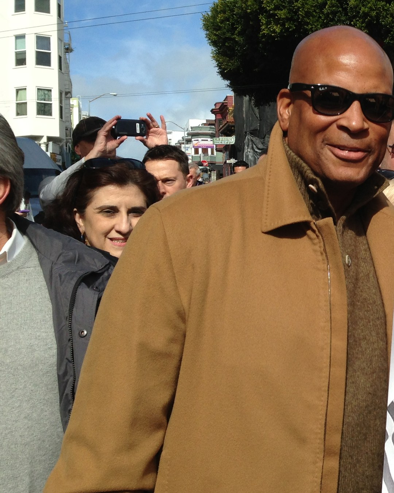

Ronnie Lott
The safety who hit like a linebacker, had part of a finger cut off rather than miss time, and walked off with four Super Bowl rings.
The Ronnie Lott Story
If you grew up watching the Niners in the 80s you knew exactly when Ronnie Lott got to the ball, because you heard it. Montana and Rice got the highlight packages. Lott got the gasps. Number 42 was the guy who set the temperature for the whole defense, and for ten years at Candlestick that temperature was mean.
He was born in Albuquerque on May 8, 1959. His dad was a career Air Force man who retired as a senior master sergeant, and the family eventually landed in Rialto, out in the Inland Empire, where Ronnie played football, basketball and baseball at Eisenhower High. The big schools came for him because of football, and he went to USC.
He became a starter in 1978, the year the Trojans split the national title with Alabama. In 1979 he was part of a secondary with Dennis Smith and Joey Browner in it, which is ridiculous when you think about it, and as a senior in 1980 he led the nation with eight interceptions and was a unanimous All American. He even played six games for the USC basketball team. That's the kind of athlete Bill Walsh was looking at.
The Niners took him eighth overall in 1981, and Walsh did something nobody does: he rebuilt the secondary around rookies. Lott, Eric Wright and Carlton Williamson all started, next to Dwight Hicks. Lott had the left cornerback job from his first day of camp. He picked off seven passes, ran three of them back for touchdowns, which only Lem Barney had done as a rookie before him, made first team All Pro, and finished second to Lawrence Taylor for Rookie of the Year. A franchise that had won ten games total in the previous three years went 13 and 3 and beat Cincinnati 26 to 21 in Super Bowl XVI. I'm not saying the rookie did that alone. I'm saying it doesn't happen without him.
He led every Niners defender in tackles in 1983, made the Pro Bowl in each of his first four seasons, and won a second ring in Super Bowl XIX after the 1984 season, when all four starting defensive backs went to the Pro Bowl. In 1985 the coaches moved him to free safety. That's where he became the player people still argue about.
Then the finger. In the last regular season game of 1985, against Dallas at Candlestick, his left pinkie got crushed while he was tackling Cowboys running back Timmy Newsome. He started the wild card game at the Meadowlands a week later anyway. A bone graft would've cost him time the next season, so in April 1986 he had the tip of the finger amputated instead. He's said since that he wishes he'd just had the surgery. Doesn't matter. Nobody around here ever forgot it.
And 1986 was his best year. Ten interceptions, the most in the league and tied for the franchise record, and he did it in 14 games because an injury knocked him out of the last two. First team All Pro. He made first team All Pro every year from 1986 through 1990, and the rings kept coming: Super Bowl XXIII over the Bengals after the 1988 season, then the 55 to 10 demolition of Denver in Super Bowl XXIV. In his ten years here the Niners won eight division titles and four Super Bowls, and he's one of only five guys who played on all four of those teams.
It ended badly, the way a lot of dynasty stories do. After the 1990 season the Niners left him and Roger Craig unprotected in Plan B free agency, and both of them went to the Raiders. I still don't love thinking about it. Lott went down to Los Angeles and led the whole league with eight interceptions in 1991 at strong safety, a spot he hadn't played since college, and made All Pro at a third different position. Then two years with the Jets, where he started at free safety both seasons and won the team's Dennis Byrd Award as its most inspirational player in 1994.
He signed with Kansas City in 1995 and came back to the Niners that same year, but the injuries had piled up, and he retired before the season started. Fourteen seasons, 192 games, 63 interceptions for 730 yards and five touchdowns, 17 fumble recoveries, ten Pro Bowls, eight first team All Pro selections, and nine more interceptions in 20 playoff games.
The honors came fast. He made the NFL's 75th Anniversary team while he was still playing, went into the Pro Football Hall of Fame in 2000, his first year of eligibility, in the same class as Joe Montana, and the 49ers retired number 42 at halftime of a Monday night game against Pittsburgh at Candlestick on November 17, 2003. The College Football Hall of Fame took him in 2002. In 2019 he made the NFL's 100th Anniversary team, which tells you how the league itself sees him.
Off the field he never really left. He worked on Fox NFL Sunday in 1996 and 1997, then went into business, cofounding HRJ Capital with Harris Barton and Montana and owning car dealerships. He and his wife Karen started All Stars Helping Kids, and he lives down the Peninsula in Cupertino. The Lott IMPACT Trophy, given every year since 2004 to the college defensive player who makes the biggest impact on and off the field, is still going in 2026, with weekly winners named all this fall. He's also the godfather to Joe Montana's youngest son, which feels exactly right.
Why He Was Clutch
Every great Niners team of the 80s had a quarterback who got the credit and a safety who decided what kind of day the other offense was going to have. Lott played 20 playoff games and started all 20. He picked off nine passes in them. Most good safeties don't get that many in two full regular seasons, and he did it against the best teams in the league with everything on the line.
Look at when the picks came. A pick six to bury the Giants in his first playoff game ever, as a rookie. A 58 yard return to the house against Minnesota in January 1990 that turned a blowout into a funeral. And the stuff that barely shows up in a box score, like being in on the fourth down stop of Pete Johnson at the goal line in Super Bowl XVI, or the hit on Ickey Woods in Super Bowl XXIII that the Niners coaches swear took the air out of Cincinnati's running game.
He wasn't perfect, and neither were those teams. The Giants beat him twice in the playoffs, including the 15 to 13 NFC title game in January 1991 that turned out to be his last game in red and gold, and I still can't watch Matt Bahr kick a football. But when a game got ugly and physical and close, he was the guy you wanted standing in the middle of the field. He started a playoff game a week after his finger got crushed. What else do you need to know?
Clutch Moments
- September 27, 1981
The rookie introduces himself to Candlestick
The Niners were 1 and 2 and hosting New Orleans, clinging to a 14 to 7 lead in the fourth quarter. Lott jumped a pass and took it back 26 yards for a touchdown to make it 21 to 7. The Saints scored late, the Niners won 21 to 14, and they lost only one more game the rest of the year. It was the first of his three interception returns for scores that rookie season.
- January 3, 1982
Two picks and a dagger against the Giants
His first playoff game. The Niners led New York 31 to 17 in the fourth quarter at Candlestick when Lott picked off Scott Brunner and returned it 20 yards for a touchdown to make it 38 to 17. He finished with two interceptions and the Niners won 38 to 24, a week before The Catch.
- January 24, 1982
The goal line stand in Super Bowl XVI
Third quarter in Pontiac, Niners up 20 to 7, and the Bengals had a first down at the 3. Pete Johnson got to the 1. The next run lost a yard. Dan Bunz stopped Charles Alexander short on a swing pass. On fourth down Cincinnati went to Johnson one more time, and Lott, Bunz and Jack Reynolds stopped him for no gain. The Niners held on, 26 to 21, for the first title in franchise history.
- December 22, 1985
The finger
Last regular season game, Dallas at Candlestick. The Niners trailed 16 to 10 at the half and came back to win 31 to 16, and Lott had an interception. In that game his left pinkie was crushed while he was tackling Timmy Newsome. A week later he started the wild card game at the Meadowlands anyway, and the Niners lost 17 to 3. In April 1986 he had the tip of the finger amputated so he wouldn't miss time the next season.
- January 22, 1989
Putting out Ickey Woods
Super Bowl XXIII in Miami. Ickey Woods was running hard on the Niners early, and Lott told the sideline he was going to put his fire out. Then he hit him. Secondary coach Ray Rhodes said that hit knocked the spark right out of Woods, who finished with 79 yards on 20 carries. Montana found John Taylor with 34 seconds left and the Niners won 20 to 16.
- January 6, 1990
58 yards to the house against Minnesota
Divisional round at Candlestick. Montana had the Niners up 27 to 6, and in the fourth quarter Lott picked off a Vikings pass and returned it 58 yards for a touchdown to make it 34 to 6. The Niners won 41 to 13 and didn't stop until they'd won the whole thing.
- January 28, 1990
Ring number four
Super Bowl XXIV in New Orleans. The Niners beat Denver 55 to 10, still the biggest margin in Super Bowl history, and Lott walked off with his fourth ring. He's one of five players who were on all four of those 80s championship teams, along with Montana, Keena Turner, Eric Wright and Mike Wilson.
- January 20, 1991
The last one, and it hurt
NFC Championship Game at Candlestick, with a third straight Super Bowl on the table. Lott started at free safety. The Niners led 13 to 9 going into the fourth quarter, then Matt Bahr kicked two more field goals, the last a 42 yarder, and the Giants won 15 to 13. It was Lott's last game as a Niner. That spring the team left him unprotected and he signed with the Raiders.
The Highlights
What They Said About Lott
“Ronnie is a perfectionist and he demands that everyone plays at his level.”
“He's like a middle linebacker playing safety. He's devastating. He may dominate the secondary better than anyone I've seen.”
“Nobody's ever tried to hit a guy harder than he does, and he does it on a regular basis.”
“it just knocked Ickey's spark right out of him. The game turned right then because Ickey just didn't run with the same authority after that.”
“That guy's going to Canton on roller skates.”
“I'm as proud of you as if my own son was coming into the Hall of Fame.”
Career Stats
| Year | Team | G | GS | Int | Yds | Avg | Lng | TD | Sk | FR |
|---|---|---|---|---|---|---|---|---|---|---|
| 1981 | SF | 16 | 16 | 7 | 117 | 16.7 | 41 | 3 | 0.0 | 2 |
| 1982 | SF | 9 | 9 | 2 | 95 | 47.5 | 83 | 1 | 0.0 | 0 |
| 1983 | SF | 15 | 14 | 4 | 22 | 5.5 | 22 | 0 | 1.0 | 1 |
| 1984 | SF | 12 | 11 | 4 | 26 | 6.5 | 15 | 0 | 1.0 | 0 |
| 1985 | SF | 16 | 16 | 6 | 68 | 11.3 | 25 | 0 | 1.5 | 2 |
| 1986 | SF | 14 | 14 | 10 | 134 | 13.4 | 57 | 1 | 2.0 | 0 |
| 1987 | SF | 12 | 12 | 5 | 62 | 12.4 | 34 | 0 | 0.0 | 2 |
| 1988 | SF | 13 | 12 | 5 | 59 | 11.8 | 44 | 0 | 0.0 | 4 |
| 1989 | SF | 11 | 11 | 5 | 34 | 6.8 | 28 | 0 | 0.0 | 0 |
| 1990 | SF | 11 | 11 | 3 | 26 | 8.7 | 15 | 0 | 0.0 | 1 |
| 1991 | RAI | 16 | 16 | 8 | 52 | 6.5 | 27 | 0 | 1.0 | 1 |
| 1992 | RAI | 16 | 16 | 1 | 0 | 0.0 | 0 | 0 | 0.0 | 1 |
| 1993 | NYJ | 16 | 16 | 3 | 35 | 11.7 | 29 | 0 | 1.0 | 2 |
| 1994 | NYJ | 15 | 15 | 0 | 0 | 0.0 | 0 | 0 | 1.0 | 1 |
| Career | 192 | 189 | 63 | 730 | 11.6 | 83 | 5 | 8.5 | 17 |
Int, Yds, Avg, Lng and TD are interception returns. FR is fumble recoveries. Sacks were not an official stat until 1982, and tackles before 1994 were unofficial, so tackles are left out. RAI is the Los Angeles Raiders. Cross checked against ESPN and the Pro Football Hall of Fame. Scroll the table sideways on a phone.
Postseason
| Year | Team | G | Int | Yds | TD |
|---|---|---|---|---|---|
| 1981 | SF | 3 | 2 | 32 | 1 |
| 1983 | SF | 2 | 1 | 0 | 0 |
| 1984 | SF | 3 | 1 | 38 | 0 |
| 1985 | SF | 1 | 0 | 0 | 0 |
| 1986 | SF | 1 | 0 | 0 | 0 |
| 1987 | SF | 1 | 0 | 0 | 0 |
| 1988 | SF | 3 | 2 | 10 | 0 |
| 1989 | SF | 3 | 2 | 72 | 1 |
| 1990 | SF | 2 | 0 | 0 | 0 |
| 1991 | RAI | 1 | 1 | 35 | 0 |
| Career | 20 | 9 | 187 | 2 |